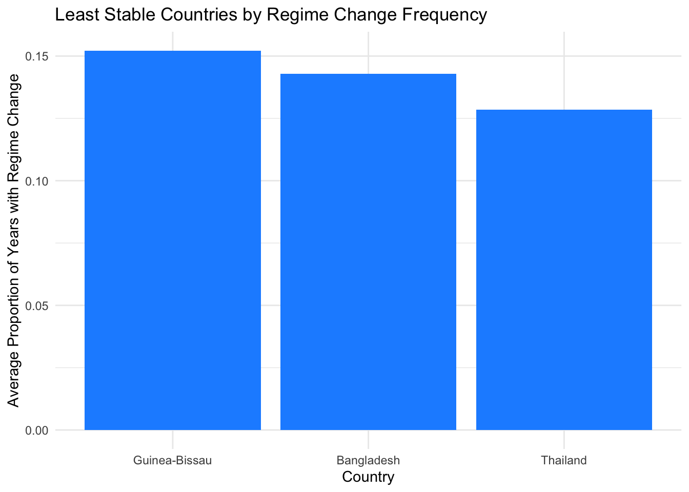

library(tidyverse)
library(purrr)Project 1 Checkpoint 2
Load in necessary libraries
Importing Democracy Data from Github
democracy_data <- readr::read_csv('https://raw.githubusercontent.com/rfordatascience/tidytuesday/main/data/2024/2024-11-05/democracy_data.csv')Part 1
Summary on: What countries have the most regime changes over time?
count_regime_changes<-function(country){
country_data<-democracy_data |>
filter(country_name==country)|> # Filters so data is only inputed country
arrange(year) # Sorts data from earliest year to most recent year
regime<-country_data$regime_category_index
# Creates a vector that returns true when regime has been changed from previous year
changes<- regime != lag(regime)
sum(changes, na.rm=TRUE) # Sum the amount of times the regime has changed
}
results<- democracy_data |>
distinct(country_name) |> # Keeps only unique country names
mutate(n_changes=map_dbl(
country_name,count_regime_changes
)) # Runs the function on each country and counts the number of changes
results |> slice_max(n_changes,n=10)# A tibble: 11 × 2
country_name n_changes
<chr> <dbl>
1 Thailand 9
2 Argentina 8
3 Pakistan 8
4 Bangladesh 7
5 Bolivia 7
6 Burundi 7
7 Cambodia 7
8 Guinea-Bissau 7
9 Honduras 7
10 Lebanon 7
11 Peru 7Part 2
Summary on: How often do countries have full suffrage when they are democratic?
prop_suffrage_dem <- function(country) {
democracy_data |>
filter( # Keeps the years where the selected country is a democracy
country_name == country,
is_democracy == TRUE
) |>
# Computes the proportion of democratic years with full suffrage
summarise(prop_suffrage = mean(has_full_suffrage, na.rm = TRUE)) |>
# Extracts value so function returns numeric result
pull(prop_suffrage)
}
# Top 10
democracy_data |>
distinct(country_name) |>
mutate(
prop_suffrage = map_dbl(country_name, prop_suffrage_dem)
) |>
slice_max(prop_suffrage, n = 10)# A tibble: 127 × 2
country_name prop_suffrage
<chr> <dbl>
1 Albania 1
2 Anguilla 1
3 Antigua and Barbuda 1
4 Argentina 1
5 Armenia 1
6 Aruba 1
7 Australia 1
8 Austria 1
9 Bahamas 1
10 Bangladesh 1
# ℹ 117 more rows# Bottom 10
democracy_data |>
distinct(country_name) |>
mutate(
prop_suffrage = map_dbl(country_name, prop_suffrage_dem)
) |>
slice_min(prop_suffrage, n = 10)# A tibble: 10 × 2
country_name prop_suffrage
<chr> <dbl>
1 Laos 0.25
2 Liechtenstein 0.521
3 Congo, Republic of 0.538
4 Seychelles 0.556
5 Sudan 0.583
6 Somalia 0.6
7 Chile 0.630
8 Philippines 0.7
9 Switzerland 0.704
10 Peru 0.714Each number represents the proportion of democractic years where the country had full suffrage.
Part 3
Summary on: Proportion of country years (1950-2020) with a female leader within each regime, country, election system
sum_female_leader <- function(democ_data, columns, group){
female_leader_any <- democ_data |>
rowwise() |> # Selects the rows as groups to check over each year
mutate(female_leader = any(c_across(all_of(columns)), na.rm = TRUE)) |>
# Checks across defined columns for a female leader
ungroup() # Undoes rowwise() grouping
prop_female <- female_leader_any |>
group_by(across(all_of(group))) |> # Grouped by group = argument
summarise(prop_female_leader = mean(female_leader, na.rm = TRUE))
# mean of TRUE/FALSE for the proportion
return(prop_female) # returns the group argument and the proportion
}
sum_female_leader(democracy_data,
columns = c("is_female_monarch", "is_female_president"),
group = "country_name")# A tibble: 208 × 2
country_name prop_female_leader
<chr> <dbl>
1 Afghanistan 0
2 Albania 0
3 Algeria 0
4 Angola 0
5 Anguilla 0.972
6 Antigua and Barbuda 0
7 Argentina 0.127
8 Armenia 0
9 Aruba 0.887
10 Australia 0
# ℹ 198 more rowssum_female_leader(democracy_data,
columns = c("is_female_monarch", "is_female_president"),
group = "regime_category")# A tibble: 58 × 2
regime_category prop_female_leader
<chr> <dbl>
1 Administered by British military 0
2 British Dependent Territory 1
3 British Overseas Territory 1
4 British Protectorate 0
5 British Protectorate (Northern Rhodesia and Nyasaland) 0
6 British Protectorate (Nyasaland) 0
7 British colony 0
8 British protected state 0.8
9 Civilian dictatorship 0.00634
10 Colony 0.0752
# ℹ 48 more rowssum_female_leader(democracy_data,
columns = c("is_female_monarch", "is_female_president"),
group = "election_system")# A tibble: 148 × 2
election_system prop_female_leader
<chr> <dbl>
1 346 elected by municipal citizens, 181 chosen by 'social … 0
2 ? 0
3 All appointed 0
4 Appointed 0
5 Appointed by Basic Peoples Congresses 0
6 Appointed by clans 0
7 Appointed by governor 0
8 Bloc voting 0.0273
9 Block Vote 0
10 Borda count 0
# ℹ 138 more rowsFemale_leader is a constructed variable for type of leader monarch and president. It is a logical for each row and either there is a female leader or not.
Part 4
Summary on: Which countries have the least stable governments, measured by the frequency of regime changes?
#regime_stability creates a variable avg_reg_change that reports the avg regime changes per yer for that country
regime_stability <- function(country, data = democracy_data){
result <- data |>
filter(country_name == country) |>
arrange(year) |>
mutate(
change = regime_category_index != lag(regime_category_index) # creates logical variable change
) |>
summarise(avg_reg_change = mean(change, na.rm = TRUE))
return(result$avg_reg_change)
}
stability_data <- democracy_data |>
distinct(country_name) |>
mutate(avg_reg_change = map_dbl(country_name,regime_stability)) |>
arrange(desc(avg_reg_change))
ggplot(stability_data[1:3, ],
aes(x = reorder(country_name, -avg_reg_change), y = avg_reg_change)) +
geom_bar(stat = "identity", fill = "dodgerblue") +
labs(
title = "Least Stable Countries by Regime Change Frequency",
x = "Country",
y = "Average Proportion of Years with Regime Change"
) +
theme_minimal()
Guinea-Bissau, Bangladesh, and Thailand exhibit the highest frequencies of regime change, indicating they are among the least politically stable countries in the data set.